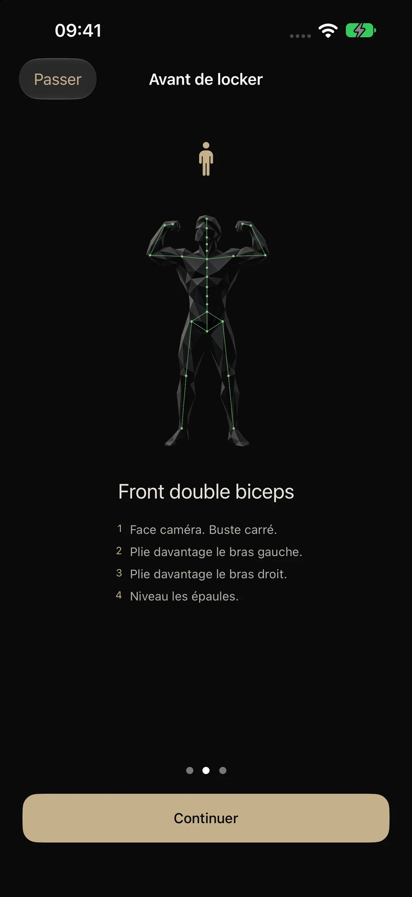

GUIDE · POSE
Front double biceps : répéter une ligne lisible
Pour comparer cette pose, garde le même point de vue et corrige une différence visible à la fois : hauteur des bras, alignement des épaules ou stabilité du bassin.
Installe ton repère
- Pose l’iPhone à une distance qui garde tout le corps dans l’image, même lorsque les coudes s’ouvrent.
- Garde la caméra au même endroit à chaque séance et évite un contre-jour qui masque les articulations.
- Prends la position face à l’objectif, vérifie la hauteur relative des coudes et des épaules, puis tiens la ligne sans te précipiter.
- Compare une prise à la fois. Si un angle change, corrige-le avant de refaire toute la pose.

Comment PoseLock aide ici
L’app suit des points du corps avec Vision et donne un retour sur les angles qu’elle peut détecter. Quand le seuil de tenue est atteint, elle conserve une photo locale pour le journal. Ce retour n’est pas une note de jury : il dépend de la visibilité des membres et du modèle de pose. Une main ou un coude hors cadre réduit sa fiabilité.
Pour construire une routine complète, commence par le guide de posing bodybuilding. Si tu n’as personne pour tenir le téléphone, vois comment t’entraîner seul.
Questions fréquentes
Faut-il se placer près de la caméra ?
Non. Il faut surtout que bras, mains, jambes et pieds restent visibles pendant toute la pose.
Un score plus haut signifie-t-il une meilleure place en compétition ?
Non. Il indique seulement que les repères détectés se rapprochent davantage du modèle utilisé par l’app, dans les conditions de cette prise.